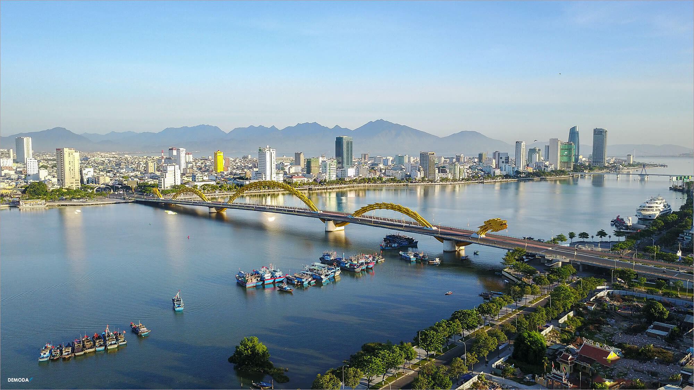
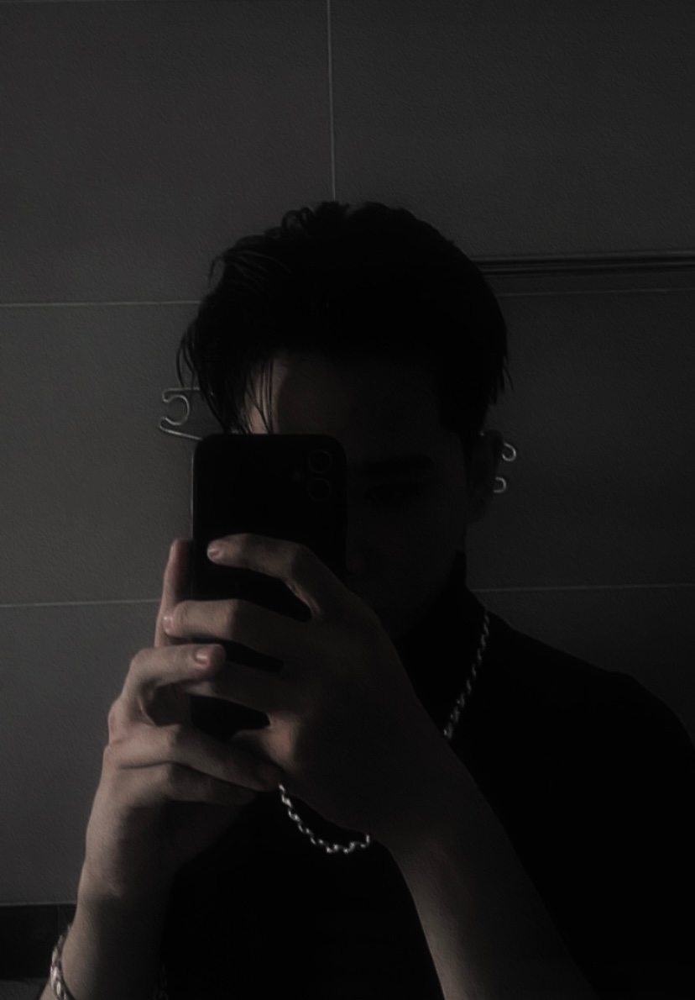

|  | ||||
|---|---|---|---|---|
|
|
||||
| Xin chào mọi người mình là: Vương Quốc Khánh, mình sinh ra và lớn lên ở Đà Nẵng, và mình muốn giới thiệu cho các bạn biết những điều đặc biệt ở Đà Nẵng như:Đồ ăn, địa điểm du lịch, những công trình nổi tiếng như Những cây cầu và các bãi biển xanh và mát mẻ. Đà Nẵng quê tôi rất nhiều danh lam thắng cảnh đẹp ngút trời .Các bạn có thể trải nghiệm Bà Nà hills với những trò chơi và khu du lịch để check in một cách đẹp nhất. Chỉ cần đến đây bạn có thể sẽ xua tan những mệt mỏi và chỉ để lại những thứ tươi đẹp mà thôi chính là nơi mà rất nhiều khách du lịch đến đây. | Thông Tin Cá NhânBản Thân
Họ và Tên: Vương Quốc Khánh
Sinh Ngày: 14/03/2004 Giới Tính: Nam Đang học tại: Trường Đại Học Đại Nam (DNU) Chiều Cao: 1m78 Quê QuánĐà Nẵng
|
|  |
|